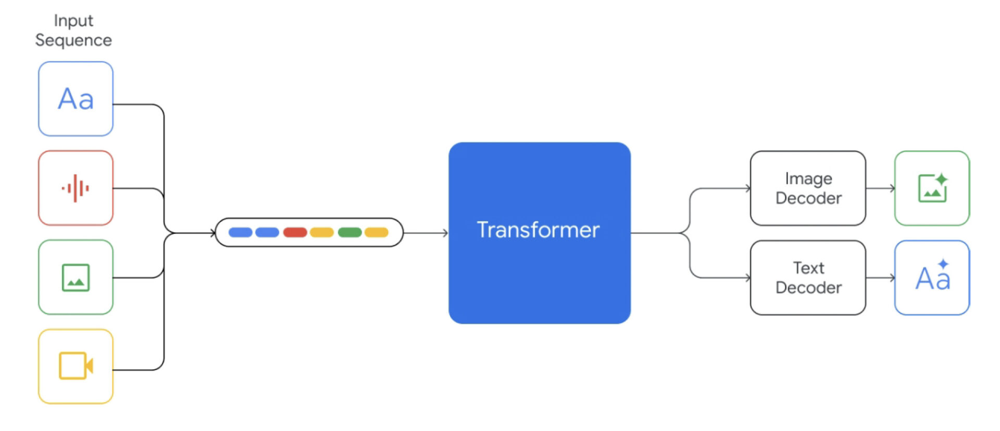
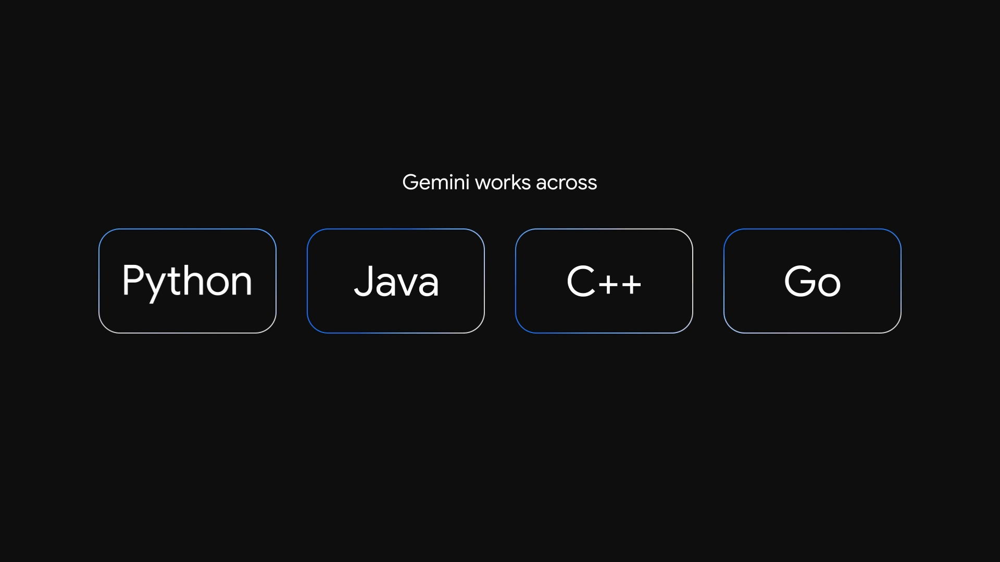
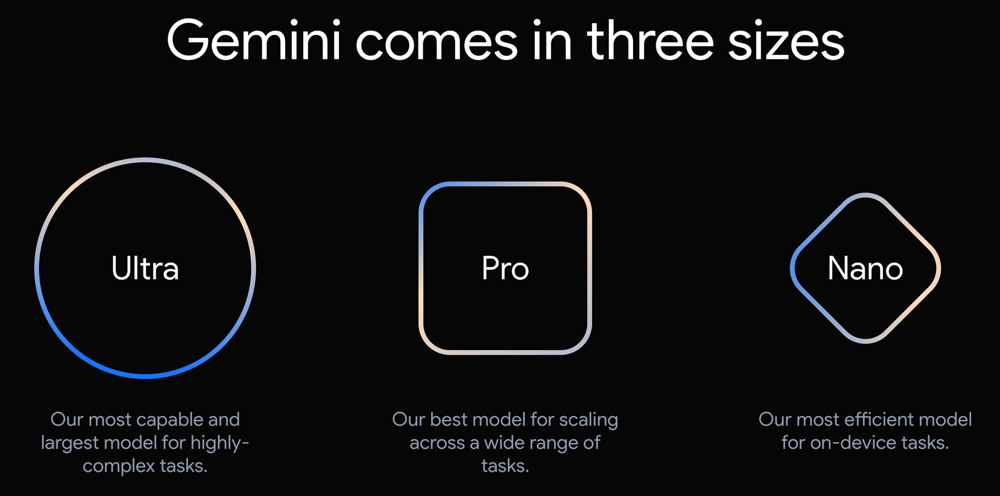

Geminiの主な機能
Geminiが持つ革新的な能力と、それがもたらす可能性をご紹介します。
1. 高度なマルチモーダル理解
Geminiは、テキスト、画像、音声、動画といった異なる形式の情報を同時に処理し、それらの間の複雑な関係性を理解する能力に優れています。これにより、単一のモダリティでは捉えきれない、より深い文脈を把握した上で、適切な応答やコンテンツを生成することが可能です。
- **画像理解:** 画像の内容を詳細に記述したり、画像から関連する情報を推論したりできます。
- **音声理解:** 音声の文字起こしだけでなく、話者の意図や感情を理解し、適切な反応を返します。
- **動画分析:** 動画内のオブジェクト、イベント、時間経過を理解し、要約や質問応答が可能です。
2. 高度な推論と問題解決能力
複雑な問題に対しても、論理的な思考プロセスを経て、最適な解決策を導き出すことができます。数学的な問題解決、コードの生成とデバッグ、科学的なデータの分析など、多岐にわたる専門的なタスクをサポートします。
- **コード生成・デバッグ:** 複数のプログラミング言語でのコード生成、既存コードのバグ特定と修正。
- **複雑な質問応答:** 膨大な情報の中から必要な情報を抽出し、論理的に構成された回答を提供。
- **創造的なコンテンツ生成:** 詩、スクリプト、音楽の作曲、メール、手紙など、多様な形式の創造的なテキストコンテンツを生成。
3. 柔軟なスケーラビリティと効率性
Geminiは、ウルトラ（Ultra）、プロ（Pro）、ナノ（Nano）といった複数のサイズで提供され、スマートフォンなどのエッジデバイスから大規模なデータセンターまで、多様な環境で効率的に動作するように設計されています。これにより、開発者はプロジェクトの要件に合わせて最適なモデルを選択し、コストとパフォーマンスのバランスを取ることができます。
- **Gemini Ultra:** 最も高性能で、非常に複雑なタスクや大規模なアプリケーション向け。
- **Gemini Pro:** 幅広いタスクに対応する汎用性の高いモデル。多くのアプリケーションでバランスの取れた性能を発揮。
- **Gemini Nano:** スマートフォンなどのエッジデバイスでの実行に最適化された軽量モデル。